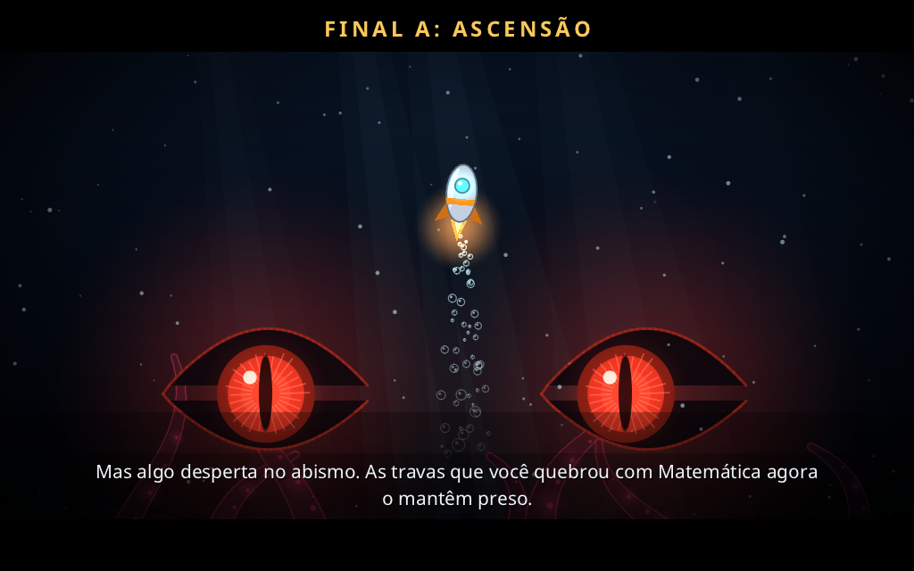
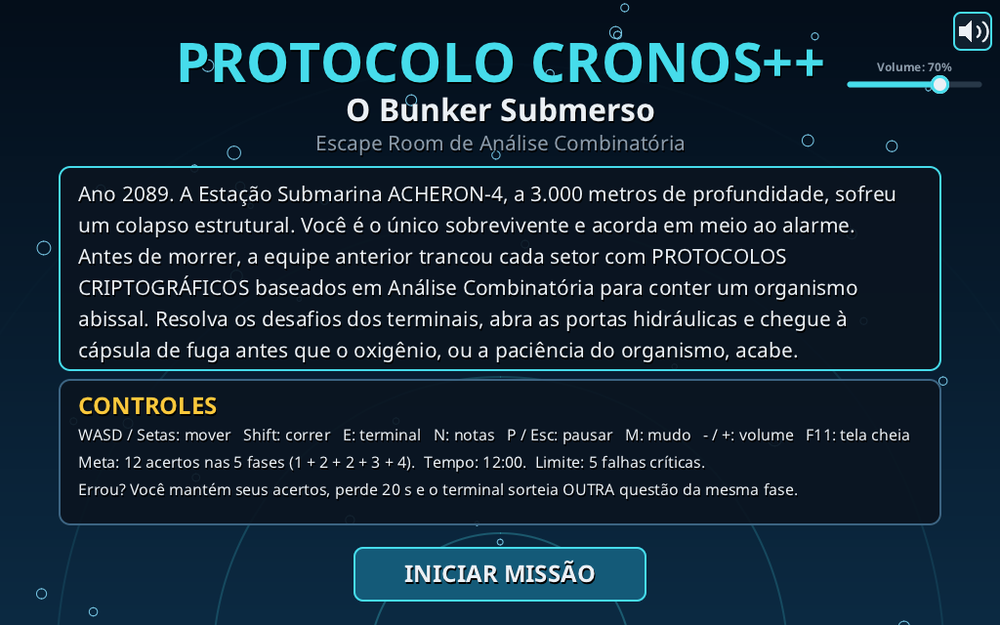
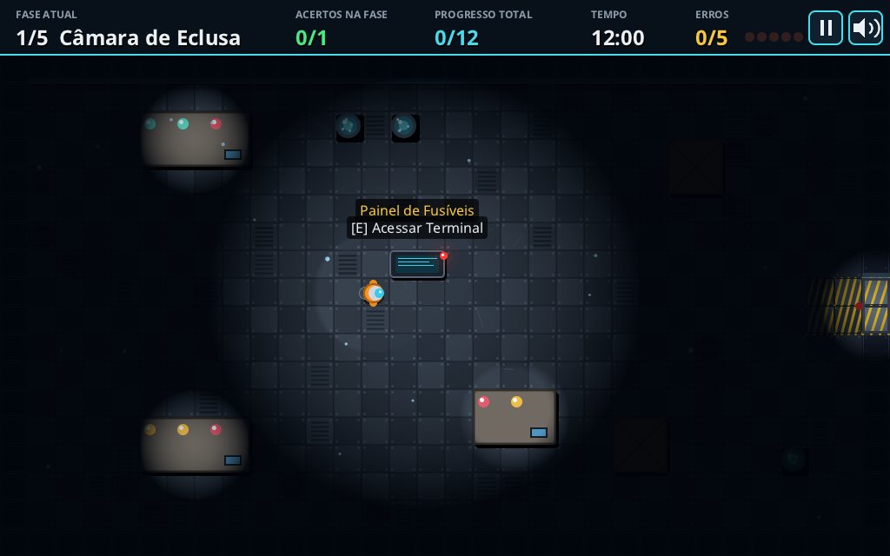
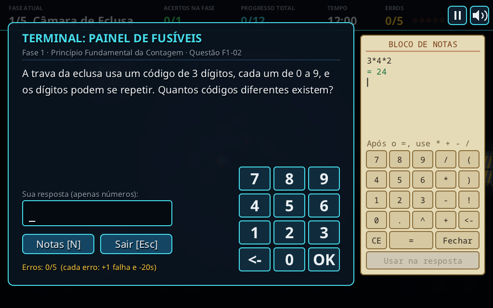
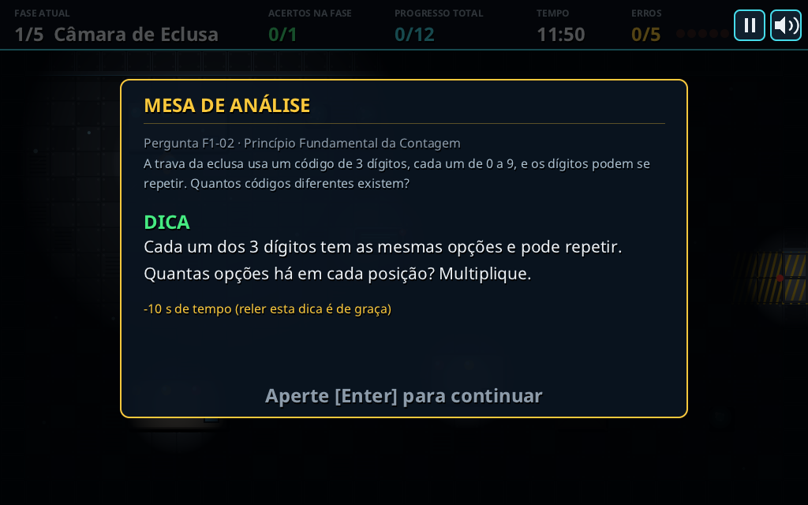
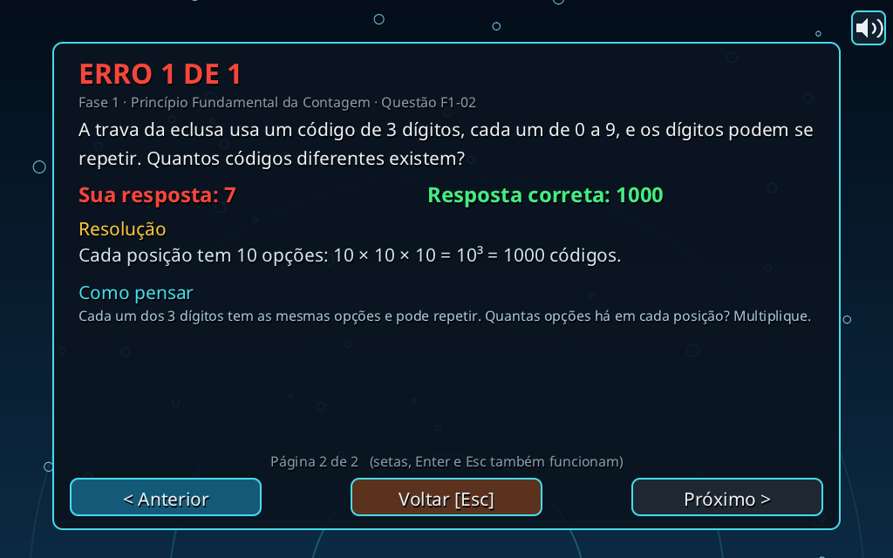
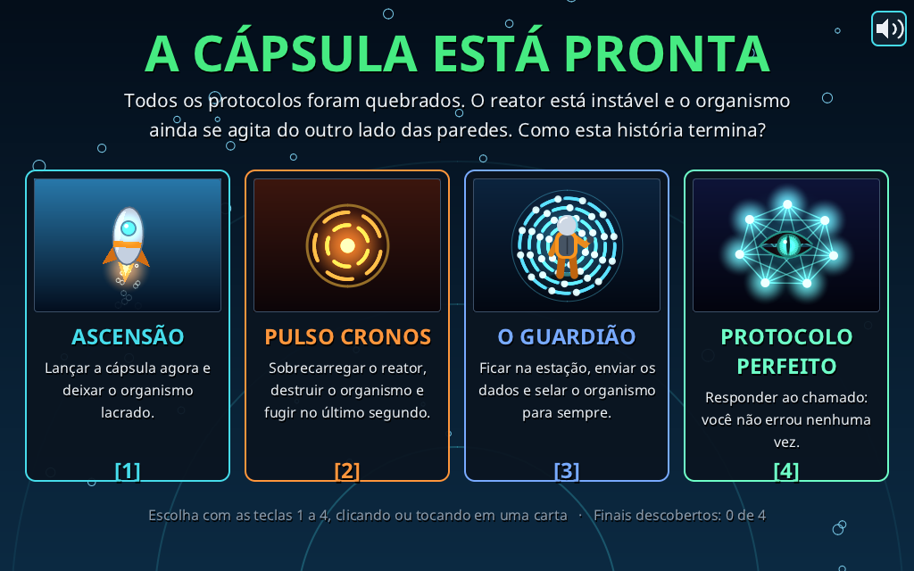
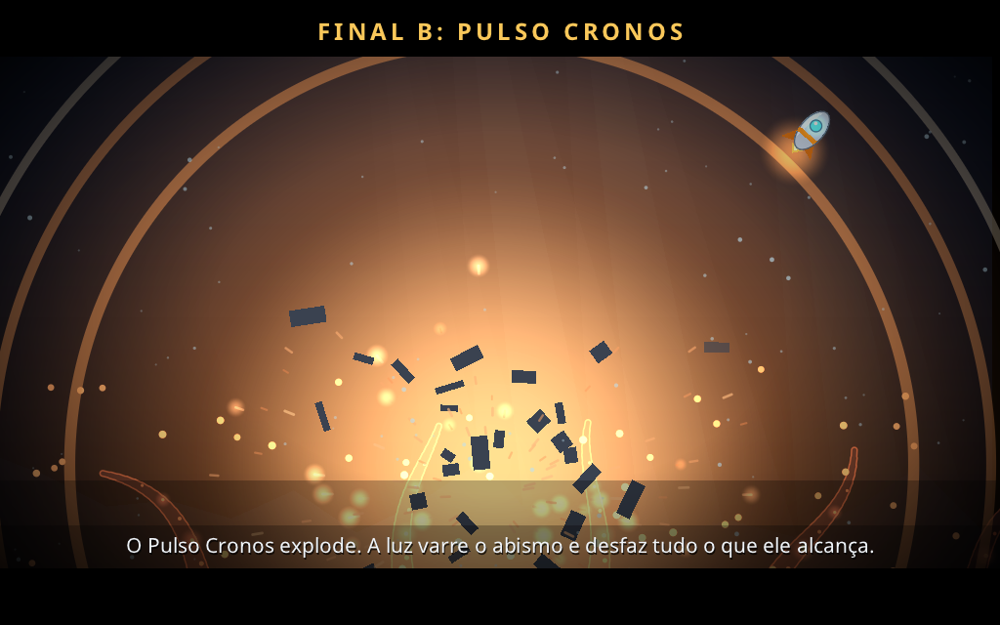
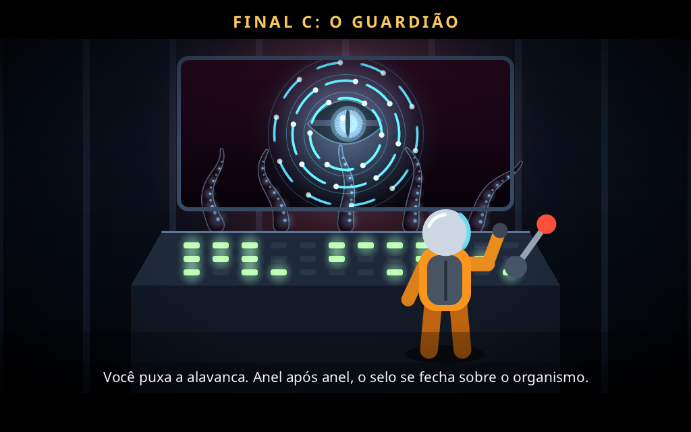
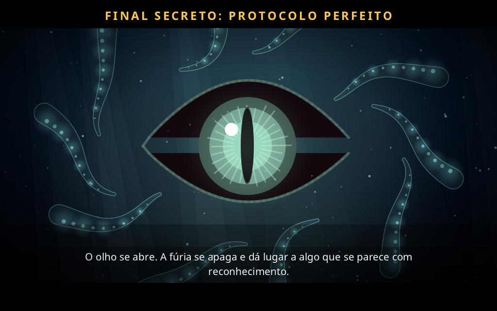

ESCAPE ROOM EDUCATIVO
Protocolo
Cronos++
O Bunker Submerso: um jogo para aprender Análise Combinatória fugindo de uma estação a 3.000 metros de profundidade.
Vinicius Luiz Ferreira de Mattos
Ciência de Dados e IA
A HISTÓRIA
Preso em Acheron-4
Ano 2089. A estação submarina sofre um colapso estrutural, e você é o único sobrevivente.
A equipe anterior trancou cada setor com protocolos baseados em Análise Combinatória, para conter um organismo abissal.
Resolva os terminais, abra as portas hidráulicas e chegue à cápsula de fuga antes que o tempo acabe.

CONTEÚDO
Cinco salas, cinco assuntos
| Sala | Assunto | Nível | Acertos | Banco |
|---|---|---|---|---|
| 1 · Câmara de Eclusa | Princípio Fundamental da Contagem | Fácil | 1 | 10 |
| 2 · Laboratório Genético | Permutação simples e com repetição | Básico | 2 | 20 |
| 3 · Central de Sonar | Arranjo simples | Intermediário | 2 | 20 |
| 4 · Câmara do Reator | Combinação simples | Avançado | 3 | 20 |
| 5 · Sala da Cápsula | Restrições e integração | Difícil | 4 | 20 |
90 questões no total, sorteadas sem repetição dentro da partida.
REGRAS
Errar custa, mas ensina
12
acertos
Somando as cinco salas, para vencer.
12
minutos
Tempo total da partida.
5
falhas
No quinto erro, o bunker colapsa.
20 s
de punição
A cada erro, o terminal sorteia outra questão do mesmo nível.
A resolução da questão errada aparece na hora, e os acertos já conquistados não se perdem. Chutar a mesma pergunta não funciona.
COMO SE JOGA
Explorar no escuro

Lanterna
A sala é escura: o mergulhador ilumina o caminho enquanto procura os terminais.
Terminais e porta
Luz vermelha é pendente, verde é concluído. Com a meta cumprida, a porta hidráulica abre.
Controles
WASD ou setas, Shift para correr e E para interagir. No celular, joystick e botões na tela.
NO TERMINAL
Pergunta e rascunho lado a lado
Resposta numérica
Digite pelo teclado ou pelo teclado na tela.
Bloco de notas
Uma calculadora com fatorial, potência e parênteses, aberta com a tecla N.
Usar na resposta
O resultado inteiro da conta vai direto para o campo do terminal.

APRENDIZADO
Dica durante, revisão depois

Mesa de análise
Mostra o método da pergunta atual, nunca o resultado. Custa 10 s na primeira consulta.

Painel de revisão
Ao fim, resume o desempenho por assunto e reapresenta cada erro com a resolução.
O FIM
Você escolhe como termina

Depois das cinco salas, quatro cartas animadas apresentam os desfechos.
O quarto é secreto: só abre para quem vence sem nenhuma falha crítica.
O jogo guarda os finais já vistos, um convite para jogar de novo.
QUATRO FINAIS ANIMADOS
Cada escolha, uma cena
Ascensão
Fugir e deixar o organismo lacrado.

Pulso Cronos
Sobrecarregar o reator e destruir tudo.

O Guardião
Ficar e fechar o selo por dentro.

Protocolo Perfeito
Secreto: descobrir quem o organismo era.
TECNOLOGIA
Reescrito em C++, feito por código
Núcleo portátil
Regras, desenho e som em C++, sem depender do sistema. A camada SDL2 liga o jogo à tela, ao áudio e à entrada.
Sem arquivos de arte
Cenários, animações, efeitos e músicas são gerados em tempo real. Só as fontes de texto vêm de fora.
Um código, várias telas
Versões compiladas para Windows, Linux, macOS e navegador, publicadas por um fluxo automático no GitHub.
Testado
Testes automáticos percorrem o banco de questões, os mapas, as regras e os finais.
A primeira versão do jogo foi feita em Python com Pygame; esta é a reescrita ampliada.
SUA VEZ
Você consegue escapar?
Abra no navegador do computador ou do celular. Não precisa instalar nada.